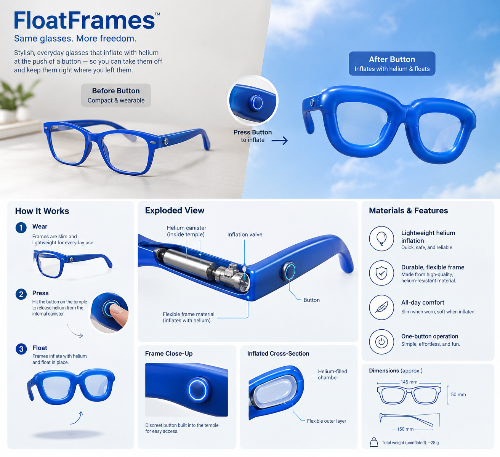

Michael, Micah, and I had to combine "glasses" with "light, wispy, floating". We came up with a design for a pair of glasses that inflate with helium when a button is pressed. Once the glasses are inflated, the glasses can float in the air when needed. Sometimes you don’t have a place to put your glasses safely, so this a great alternative and frees up your hands to have an easier time with the task that you want to do. The frame now has to be made with an inflatable material like rubber or latex, and will have to have circuits inside the glasses to control the inflation and deflation of the frames.